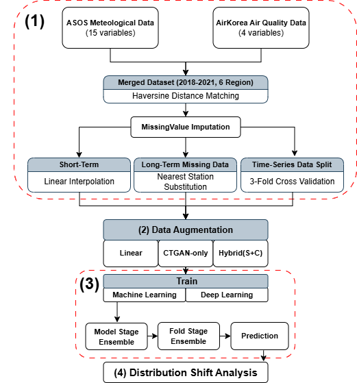
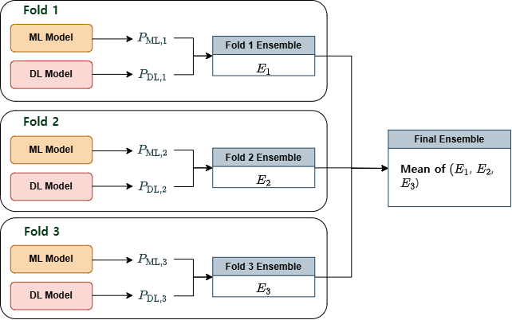
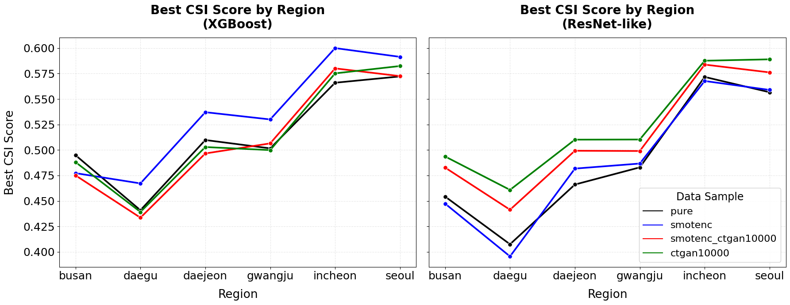
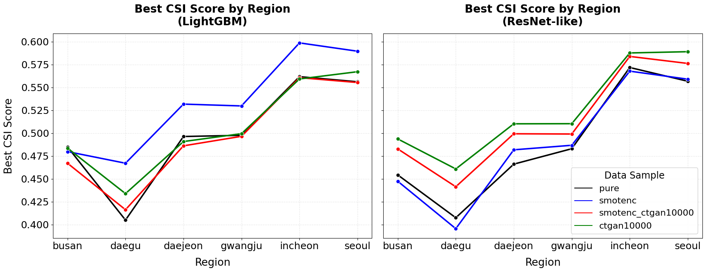

ASOS + AirKorea
Visibility is modeled for six South Korean city stations by merging KMA ASOS meteorological observations with AirKorea ground-based air-quality measurements.
Project summary
Atmospheric visibility affects transportation safety, aviation operations, and environmental risk management, but low-visibility events are rare and arise from intertwined meteorological and air-pollution conditions. This project studies visibility nowcasting for six major South Korean cities—Seoul, Busan, Incheon, Daegu, Daejeon, and Gwangju—using observed weather and air-quality data from 2018 to 2021.
The paper combines ASOS meteorological observations with AirKorea air-quality measurements, handles class imbalance in the 2018–2020 training period with SMOTENC and CTGAN-based augmentation, and evaluates five machine-learning and deep-learning model families with a CSI-focused objective. Its central finding is balanced: augmentation and ensembling help the modeling workflow, while performance drops on the 2021 test period reveal temporal distribution shift that needs explicit attention in operational nowcasting.
Method

Visibility is modeled for six South Korean city stations by merging KMA ASOS meteorological observations with AirKorea ground-based air-quality measurements.
The study augments rare low-visibility classes using methods suited to mixed tabular variables and synthetic tabular generation, rather than relying on the majority class distribution alone.
XGBoost, LightGBM, ResNet-like, FT-Transformer, and DeepGBM are trained and compared across regions and augmented data settings.


Results and analysis
Because rare low-visibility detection matters more than overall majority-class accuracy, the paper emphasizes the Critical Success Index (CSI). The accepted-paper figures show how augmentation choices affect best CSI values across models and cities, then use distribution diagnostics to explain why validation gains do not transfer uniformly to the 2021 test period.




Citation
Please cite the published article when using this project page, codebase, or figures.
@article{shin2026visibility,
title = {Visibility nowcasting in South Korea: a machine learning approach to class imbalance and distribution shift},
author = {Shin, Bong Gyun and Lee, Chan Sik and Suh, Hyesun},
journal = {Theoretical and Applied Climatology},
volume = {157},
pages = {283},
year = {2026},
doi = {10.1007/s00704-026-06219-6},
url = {https://doi.org/10.1007/s00704-026-06219-6}
}